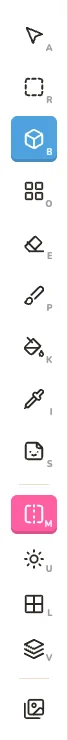
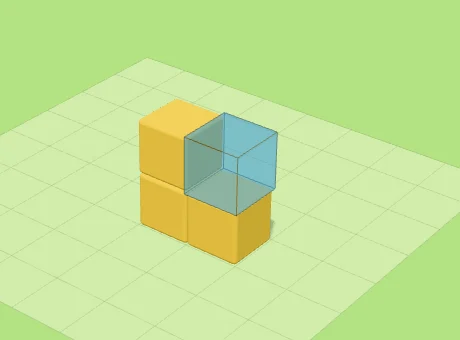
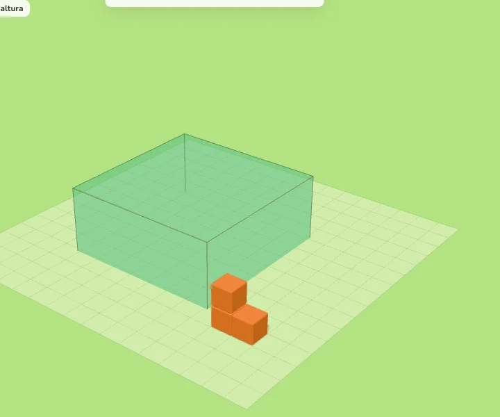
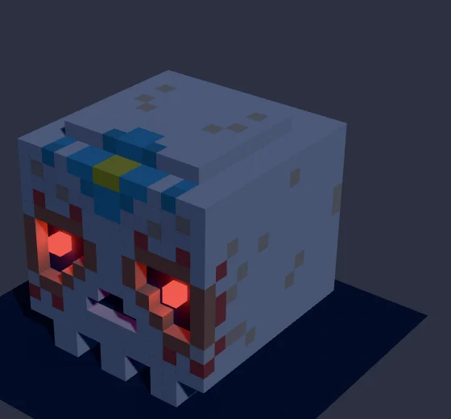
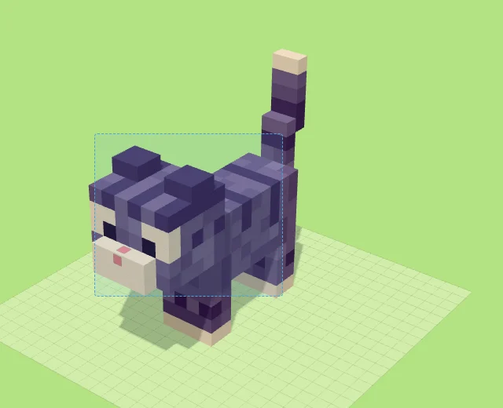
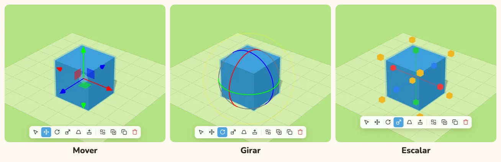
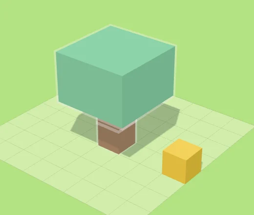
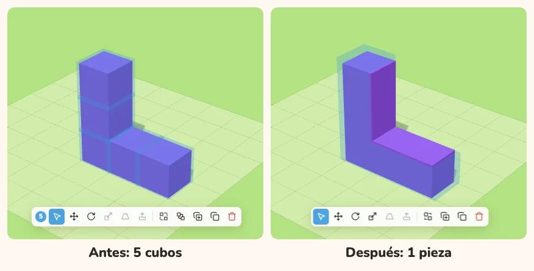
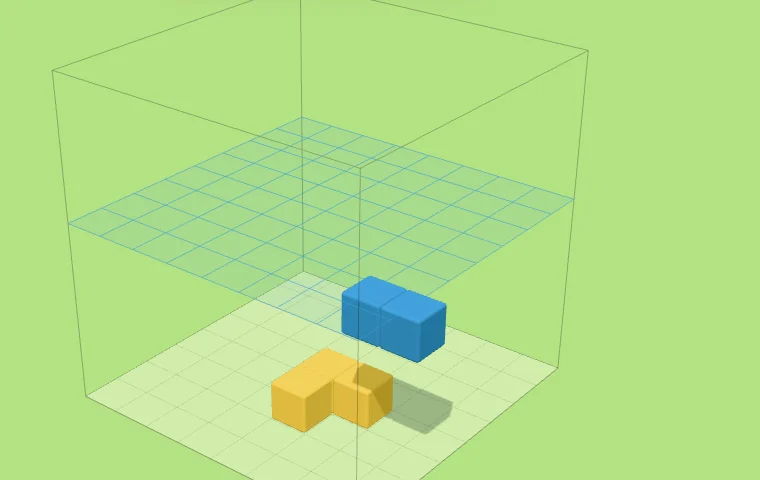
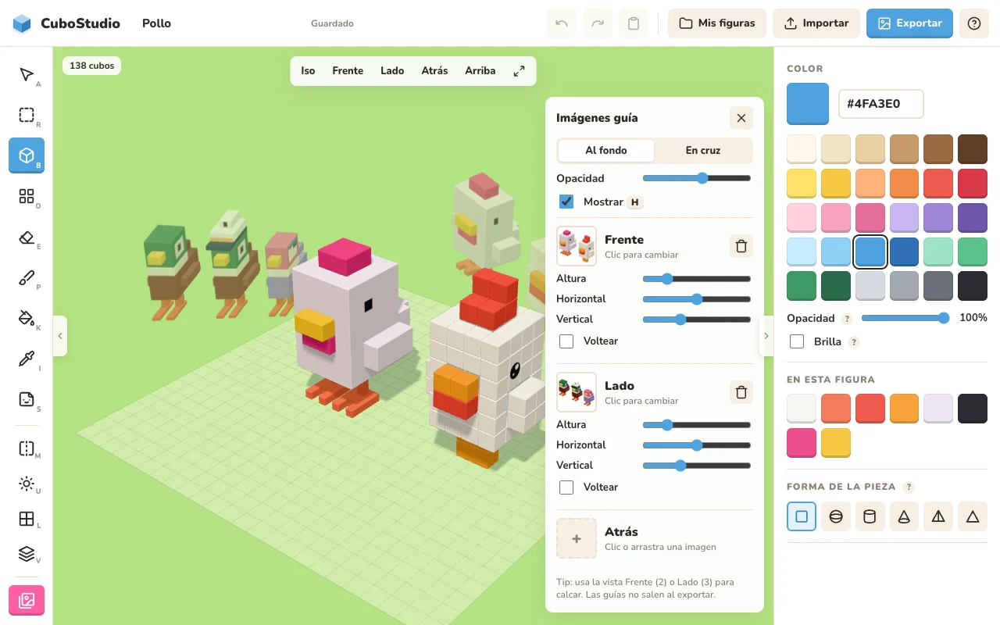

Haz figuras de cubos,
como en tus juegos favoritos
CuboStudio es un editor de figuras 3D hechas de cubos, al estilo de Pokémon Quest y Crossy Road. Funciona en tu navegador, no necesita cuenta y todo se guarda solo.
Empezar a construir
Tu primera figura en un minuto
- Abre CuboStudio. La primera vez aparecen los ejemplos: abre uno para ver cómo está hecho, o cierra la ventana para empezar en blanco.
- Con Construir B activo, haz clic en el piso: aparece tu primer cubo. Haz clic sobre una de sus caras para poner otro pegado.
- Elige otro color en el panel de la derecha y sigue construyendo. Si te equivocas, Shift + clic borra, y Ctrl + Z deshace.
- Arrastra para girar la cámara y usa la rueda para acercarte. Cuando te guste, presiona Exportar y descarga tu imagen.

2La pantalla
Todo lo que ves de un vistazo.

- Nombre de la figura. Haz clic para cambiarlo. Junto a él se indica si ya se guardó.
- Herramientas. Construir, borrar, pintar, seleccionar y las ayudas para modelar. Cada una tiene su tecla.
- Vistas. Iso, Frente, Lado, Atrás y Arriba (teclas 1–5), y el botón de encuadrar.
- La píldora. Aparece junto a lo que seleccionas, con sus modos y acciones.
- Panel. Colores, formas y escena. Muestra sólo lo que sirve para lo que estás haciendo.
- Contador. Cuántos cubos tiene tu figura.
- Mis figuras, Importar y Exportar. Tu galería, abrir archivos y guardar imágenes o modelos 3D.
La cámara
| Quiero… | Cómo |
|---|---|
| Girar alrededor | Arrastra con el botón izquierdo sobre el piso o el cielo. |
| Desplazar | Arrastra con el botón derecho. |
| Acercar / alejar | Rueda del mouse o pellizco en el trackpad. |
| Ver de frente, de lado… | Teclas 1 a 5 o los botones de arriba. |
| Encuadrar la figura | F |
3Construir
Poner, quitar y pintar piezas.
| Herramienta | Tecla | Qué hace |
|---|---|---|
| Construir | B | Pone una pieza en el piso o sobre una cara. |
| Caja | O | Arrastra para llenar un área; la rueda da la altura. |
| Borrar | E | Quita la pieza. |
| Pintar | P | Clic, o mantén el clic y arrastra, para pintar de corrido. |
| Rellenar | K | Pinta todas las piezas conectadas del mismo color. |
| Gotero | I | Toma el color de una pieza. |



Formas de pieza
No todo tiene que ser cubo. En Forma de la pieza eliges cubo, esfera, cilindro, cono, pirámide o cuña. Las formas apuntan hacia afuera de la cara donde haces clic.

Opacidad: agua y vidrio
Baja la Opacidad (10–100 %) para hacer agua, vidrio o hielo. Dentro de las piezas transparentes se puede seguir construyendo, por ejemplo peces dentro del agua.
Se aplica a lo que construyes, pintas o tienes seleccionado.

Brilla: piezas que dan luz

Marca Brilla y la pieza se ve en su color pleno e ilumina lo que tiene cerca con luz de su color: lámparas, fuego, lava u ojos encendidos.
Luce mucho más con la luz de Noche (ver Escena y luz).
4Seleccionar y editar
Mover, girar, escalar, copiar, agrupar y fusionar.
Seleccionar
- Seleccionar A: clic en una pieza. Shift + clic suma o quita piezas. Clic en el piso deselecciona.
- Selección rectangular R: arrastra un rectángulo y se selecciona todo lo que quede dentro, también lo de atrás.
- Al seleccionar, las piezas se resaltan en azul con su forma real.

La píldora
Al seleccionar aparece una barrita flotante con todo lo que puedes hacer:

| Botón | Para qué |
|---|---|
| Sólo seleccionar | Sin flechas ni manijas: junta varias piezas sin que nada estorbe. |
| Mover | Flechas X / Y / Z, en pasos de 0.1. |
| Girar | Aros de 90°. |
| Escalar | Manijas en las caras (crece hacia ese lado) y esquinas amarillas (crece parejo). |
| Deformar · Extruir | Cambiar la forma de una cara o sacar piezas nuevas (sección 5). |
| Agrupar · Fusionar · Duplicar · Copiar · Eliminar | Las acciones sobre lo seleccionado. |

Imanes y topes
- Escalar: el tamaño se pega un momento en los números enteros (1, 2, 3…), y las manijas dan un saltito. Si sigues jalando, se suelta.
- Mover: se pega al alinear con la cuadrícula y al tocar otra pieza.
- Nada se sale de la cuadrícula: al mover o escalar, se frena en la orilla.
Copiar, pegar y duplicar
Ctrl + C / V copia y pega, también entre figuras distintas. Ctrl + D duplica al instante. Lo pegado queda seleccionado para acomodarlo.
Grupos
Agrupar Ctrl + G une varias piezas: un clic en cualquiera selecciona el grupo completo, y al pasar el mouse se resalta todo.
Para tomar una sola pieza de un grupo, usa Ctrl/⌘ + clic. Desagrupar es Ctrl + Shift + G.

Fusionar y Separar
Fusionar Ctrl + J une cubos de un solo color en una sola pieza: un bloque, o una forma como L, E o T, con orillas limpias. Separar Ctrl + Shift + J la regresa a cubos sueltos.

5Deformar y Extruir
Rampas, techos, pirámides… y sacar piezas nuevas de una cara.
Deformar

- Selecciona un cubo o bloque y elige Deformar en la píldora.
- Elige la cara con los cuadritos blancos.
- Jala una manija naranja para achicar o agrandar ese lado, o la azul del centro para inclinar la cara.

- Imán: al tamaño original, al lado recto, a la mitad, al filo (ancho 0), a 45° y al centro.
- Enderezar (en la píldora) regresa la pieza a caja.
- La deformación se conserva al mover, girar, escalar, copiar y con Espejo.
Extruir
Elige Extruir en la píldora y aparecen cuadritos morados en las 6 caras.
Jala directo el de la cara que quieras, como al escalar, y sale una pieza nueva del tamaño y forma exactos de esa cara, del mismo color.
Al soltar, la pieza nueva queda seleccionada: sigue extruyendo tramo por tramo para sacar cuellos, patas o ramas.

6Calcomanías
Ojos, bocas, mejillas y más, sin construirlos cubo por cubo.

- Con Calcomanía S, elige un diseño en el panel y haz clic en una cara. Se pega con el color actual.
- Haz clic sobre una calcomanía ya pegada para cambiarle diseño y color.
- Con Seleccionar la mueves, la agrandas con Escalar o la borras con Supr.
- Viajan con su pieza: si mueves o giras la pieza, la calcomanía va con ella.
7Ayudas para modelar
Espejo M
Todo lo que construyes, pintas o borras se repite del otro lado: perfecto para personajes simétricos.
Además, cada pieza tiene su pareja del otro lado, que se resalta en azul claro y cambia con ella. Al mover a los lados va al revés; arriba, abajo, adelante y atrás, igual.

Marcar orillas L

Dibuja el contorno de cada pieza para distinguirlas, muy útil con orillas rectas. Sólo se ve mientras modelas: no sale al exportar.
Espacio 3D V
Muestra un plano para poner cubos flotantes, sin nada debajo. Con Q / W bajas o subes de capa, y en la barra de abajo eliges si el plano va horizontal, de frente o de lado.

Imágenes guía H
Pon imágenes de frente, lado y atrás para calcar, como los image planes de los programas 3D. Pueden ir al fondo o en cruz, con altura, posición, volteo y opacidad. Se guardan con la figura y no salen al exportar.

8Escena y luz
Lo que es de toda la figura. Aparece en el panel cuando no estás creando ni editando piezas.

- Cuadrícula: 8, 16, 24, 32, 48, 64 o 128 cubos por lado.
- Fondo: pradera, cielo, arena, nube o noche.
- Luz: ambientes listos y el botón Ajustar.
- Orillas: rectas, suaves o redondas.
- Líneas del piso y Vaciar figura.
Orillas

Ambientes de luz

En Ajustar cambias el sol (color, intensidad, giro, altura, sombras y su suavidad), el ambiente y la fuerza de las piezas que brillan. La luz se guarda con cada figura y sale en las imágenes que exportas.
Mover el sol U

9Tus figuras y exportar
Mis figuras G

- Todas tus figuras con su miniatura, su luz y su fondo. Se guardan solas mientras trabajas.
- Duplica o elimina desde cada tarjeta. Nueva vacía empieza desde cero.
- La pestaña Ejemplos tiene figuras listas: al abrir una se crea una copia para editar.
Exportar Ctrl + E

| Formato | Tamaño | Para |
|---|---|---|
| Ajustado a la figura | 512 – 2048 px | Stickers y PNG sin fondo. |
| Tal como se ve en pantalla | 512 – 2048 px | Una captura con tu encuadre. |
| Cuadrado 1:1 | 1080 × 1080 | Post de Instagram, foto de perfil. |
| Vertical 4:5 | 1080 × 1350 | Feed de Instagram. |
| Historia 9:16 | 1080 × 1920 | Historias, Reels, TikTok, WhatsApp. |
| Fondo de iPhone | 1179 × 2556 | Fondo de pantalla (la figura baja para no tapar el reloj). |
| Clásico 4:3 / 3:4 | 1600 × 1200 | Fotos y presentaciones. |
| Horizontal 16:9 | 1920 × 1080 | YouTube, fondo de compu. |

- En los formatos de redes eliges el tamaño de la figura (chica, mediana o grande); la sombra llega hasta la orilla de la imagen.
- Modelo 3D (.glb): para Blender, visores 3D o tu sitio web. Lleva el sol, la luz de las piezas que brillan y sus colores.
- Proyecto (.json): la figura completa (luz, fondo y orillas incluidos) para volver a importarla. Usa Importar o arrástralo a la ventana.
10Atajos de teclado
En Mac usa ⌘ donde dice Ctrl. La lista también está en el botón ? de la app.
| Tecla | Acción | Tecla | Acción |
|---|---|---|---|
| A | Seleccionar | R | Selección rectangular |
| B | Construir | O | Caja |
| E | Borrar | P | Pintar |
| K | Rellenar | I | Gotero |
| S | Calcomanía | M | Espejo |
| U | Mover el sol | L | Marcar orillas |
| V | Espacio 3D | Q / W | Bajar / subir capa |
| H | Mostrar / ocultar guías | G | Mis figuras |
| 1 – 5 | Vistas | F | Encuadrar |
| Ctrl Z | Deshacer | Ctrl Shift Z | Rehacer |
| Ctrl C / V | Copiar / pegar | Ctrl D | Duplicar |
| Ctrl G | Agrupar | Ctrl Shift G | Desagrupar |
| Ctrl J | Fusionar | Ctrl Shift J | Separar |
| Ctrl S | Guardar ahora | Ctrl E | Exportar |
| ←↑→↓ | Mover la figura | RePág / AvPág | Subir / bajar la figura |
| Supr | Borrar lo seleccionado | Esc | Cerrar ventanas y menús |
11Preguntas y trucos
¿Dónde se guardan mis figuras?
En el navegador que estás usando, en tu compu. No se suben a ningún lado. Si borras los datos del navegador o cambias de equipo, exporta antes tus figuras como Proyecto (.json).
Me equivoqué, ¿cómo regreso?
Ctrl + Z deshace (hasta 300 pasos) y Ctrl + Shift + Z rehace. Arrastrar un gizmo, un trazo de pintura o una deformación cuentan como un solo paso.
¿Por qué no puedo fusionar unas piezas?
Fusionar sólo une cubos y bloques del mismo color (y misma opacidad). Las esferas, conos y piezas deformadas no se fusionan.
La cuadrícula no me deja hacerla más chica.
La figura tiene que caber en el tamaño nuevo. Mueve la figura con las flechas del teclado o quita lo que sobra, y vuelve a intentarlo.
¿Cómo hago un personaje simétrico rápido?
Activa Espejo M antes de empezar: todo lo que construyas se repite del otro lado, y al editar una pieza su pareja cambia con ella.
¿Cómo consigo una imagen bonita para redes?
Elige un ambiente de luz (Atardecer o Noche lucen mucho), mueve el sol U hasta que te gusten las sombras, y en Exportar elige Vertical 4:5 o Historia 9:16 con la figura en tamaño Grande.
¿Se puede imprimir en 3D?
Por ahora puedes exportar el Modelo 3D (.glb) y convertirlo en tu programa de impresión. La exportación directa a STL/3MF está en la lista de ideas.